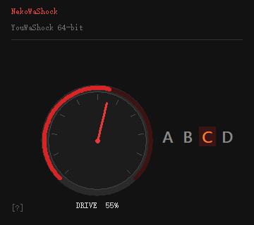

一个旋钮
往上拖加深，往下拖还原。松手是几分，声音就是几分。
一个只有一个旋钮的小插件。装进你常用的音乐软件里，往上一推， 声音立刻变厚、变紧、更有劲儿。

不需要懂参数，也不需要调十个旋钮。打开就会用。
往上拖加深，往下拖还原。松手是几分，声音就是几分。
从轻到重四种味道，点一下就换，随时和原声对比。
小音量保持原样，只有大音量被压出厚度，所以是真变了，不是变吵。
和现在的音乐软件位数一致，不会再因为位数不对而加载不出来。
右手的四个字母就是四种味道。旋钮越高，差别越明显。
轻微加厚，适合放在整首歌的最后，长时间听也不累。
完全不做处理。想确认「到底改了什么」的时候用它。
人声更靠前，鼓更有力，一耳朵就能听出区别。
接近失真。适合电子、摇滚，或者就想炸一下的时候。
旋钮在 0% 时，四个档位都不会改变声音；往上推才开始起作用。
全程不用装运行库，也不用改系统设置。
得到一个 NekoWaShock.dll，不用解压。
在你音乐软件的设置里找到「效果器目录」，把它放进去。
重新打开软件，在效果器列表里选 NekoWaShock 就能用了。
一个音频效果插件。它不会单独运行，而是要装进你平时做音乐、剪视频的软件里， 作为「效果器」挂在声音轨道上使用。
只要是 64 位、支持 VST2 效果器的 Windows 软件基本都可以，例如 Vegas Pro、REAPER、FL Studio 等。 不确定的话，下载后在软件的效果器列表里搜一下名字就知道。
不会。小音量会被原样保留，只有大音量才会被压出厚度。 所以听到的是「变厚、变紧」，而不是「变吵」。
不要。它完全免费，代码也公开，采用 MIT 协议，可以随便用、随便改。
因为够用。旋钮决定「加多少」，四个字母决定「加什么味道」， 两个动作就能调出想要的音色。
下载即用，不写注册表，不装驱动。不喜欢直接删掉就行。